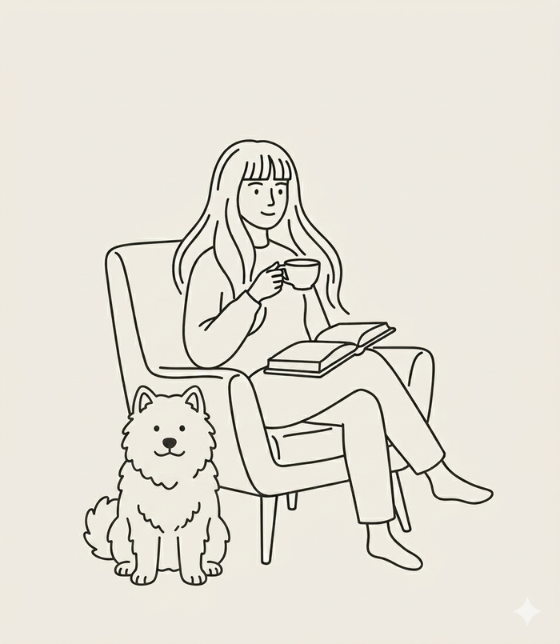

Business Team Lead, Product Development · Buildie Oy · Tampere
Over six years at Buildie I have grown from technical support to product management, twice starting as a team's first hire. In Product Services I helped build the ways of working as the team grew. When I moved into product management I worked alone, reporting to the CEO, until I made the case for a team of our own. That team was built to three people. In 2026 I took the next step and now lead my own business team in product development.
In the same period the company has grown from six employees to an organisation of more than 30. Support work, training and customer onboarding gave me the foundation I rely on in product development decisions today.
Outside work, my time goes to Edi the office dog, wandering in nature, podcasts and audiobooks.
Buildie is a construction-industry SaaS company that has grown during my career from a six-person startup to an organisation of more than 30 people (15 in product development). I was the first hire in the Product Services team and the only member of Product Management before the team expanded. The ways of working in both teams were built with me.
I lead my own business team in product development. I am responsible for the business value, direction and prioritisation of the team's work, and I bring customer insight and product management experience into the team's decision-making. The role builds directly on the product management work of the previous years.
I moved into Product Management as its first employee, reporting to the CEO. Based on that work the team grew to three people (a colleague and the Chief Product Officer alongside me). I owned the business value and development of product areas from idea to implementation and took part in roadmap work and prioritisation at company level. The wider product development team has 14 colleagues — I worked daily with developers, designers and the technical Product Owner.
The role bridged the customer interface and product development. Drawing on customer research, I identified growth opportunities and new development needs, conceptualised solutions and shaped them into feasible development packages.
I developed how customer accounts used the product and led change management in their organisations. I developed industry practices and defined requirements for deployment environments.
The first hire in the Product Services team. I was responsible for technical support and for building its processes from the ground up. I trained customers and defined onboarding projects. The ways of working took shape as the team grew.
Everyone has given excellent feedback on the superb project leadership and the precise understanding of customer needs.